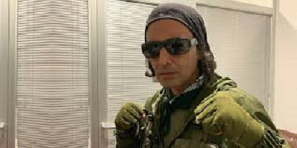

KİLLA HAKAN(Hakan Durmuş)
HAYATI
Killa Hakan gerçek adıyla Hakan Durmuş, 3 Mart 1973 yılında Berlin'de doğdu. Türkçe rapi ilk yapanlardan biri olan Killa Hakan, lakabı olan Killa sözü İngilizcede Killer yani Katil anlamına gelmektedir. Ama argoda "süper", "müthiş" anlamlarında da kullanılır. Killer kelimesini çok sık kullanmasından dolayı lakabı Killa kaldı.
Killa Hakan müzikal kariyerine kurucuları Boe B ve DJ Derezon olan Islamic Force grubu ile doğup büyüdüğü Kreuzberg/Almanya'da başladı. 1986'dan beri rapin içinde olan Killa Hakan, o yıllarda rap konserleri verdi. 1994 yılında ise aktif olarak bu piyasaya adım attı. 1997 senesinde çıkarılan Mesaj adlı albümünün ardından Boe B, 2000 senesinde hayatını kaybetti. Boe B'nin ölümüne çok üzülen Killa Hakan bazı illegal işlere girişti ve cezaevine defalarca girip çıktı. Toplam 2 yıl 9 ay hapis yattı. Almanya'da Türkçe rap yaparak Türkçe dilini Avrupa'ya tanıtan Killa Hakan, MTV Almanya kanalında 15 hafta süresince Top 10 listesinde kalmayı başaran tek Türk rap sanatçısıdır.
Sosyal medya hesaplarının sonunda kullandığı, sözlerini yazdığı ve çok sık 36 sayısının geçtiği bestelerinde 36'nın anlamı doğup yetiştiği yer olan Kreuzberg City'nin posta kodu'dur. 2002 yılında ilk solo albümü olan Çakallar ile kendisini rap dünyasına tanıttı. 2003 yılında Fuat Ergin ile birlikte Rapüstad adlı albümü yayınladı. Killa Hakan 2.solo albümü Semt Semt Sokak Türkiye albümünü 1 Eylül 2005 yılında yayınladı. Ayrıca 2005 yılında Killa Hakan Rock'n Coke'ye katıldı. Killa Hakan 2009 yılında Ceza ile birlikte Fanta Gençlik Festivali'nde de yer almıştı. 2012 yılında başrolünde Ata Demirer'in oynadığı Berlin Kaplanı filminin müziğini de yapmıştır. Killa Hakan 23 Mayıs 2012'de 8.albümü olan Orijinal'i piyasaya çıktı. Ayrıca 23 Haziran 2013'de Killa Hakan'ın 9.albümü olan Son MoHakan piyasaya çıkmadan önce Ghetto İnsider klibi yayınlandı.

ALBÜMLERİ:
• 1997 DeDe Records Islamic Force Grup Albümü Mesaj
• 2002 Rough Mix Recordings Solo Albüm Çakallar
• 2002 Rough Mix Recordings Fuat Ergin ile ortak albüm Rapüstad
• 2005 Hammer Müzik Solo Albüm Semt Semt Sokak
• 2007 Rough Mix Recordings Solo Albüm Kreuzberg City
• 2008 Esen Müzik Ceza ile ortak albüm Bomba Plak
• 2009 Fight4Music Solo Albüm Volume Maximum
• 2012 Esen Müzik Solo Albüm Orijinal
• 2012 Esen Müzik Berlin Kaplanı Soundtrack Sabır (Ata Demirer ile)
• 2014 Esen Müzik Solo Albüm Son Mohakan
• 2014 Esen Müzik Single Şarkı Ghettoda Aşk
• 2018 Esen Müzik Solo Albüm Killa Hakan
• 2019 Wovie & DMC Solo Albüm Fight Kulüp
• 2019 Wovie & DMC Solo Albüm Fight Kulüp (Bonus Tracks)
• 2020 Wovie Single Şarkı Her Şey Yolundadır (Eko Fresh & Ayaz Kaplı ile)
• 2020 Wovie Single Şarkı Saniye Saniye
• 2020 Wovie Single Şarkı Hodri Meydan
• 2020 Wovie Single Şarkı Ne Fark Eder? (Eko Fresh & Umut Timur ile)
• 2020 RedKeys Music Single şarkı Bang Bang (Khontkar ile)
• 2020 LOUD Neighbors Single şarkı Fight Kulüp2 (Massaka & Ceza & Contra & Anıl Piyancı & Khontkar & Summer Cem ile)